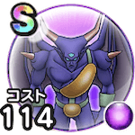

イズライール
ほこらこころ最大コスト+4ヒャド属性ダメージ+15%メラ属性ダメージ+15%エレメント系へのダメージ+10%呪い耐性+10%混乱耐性+10% / 8.5点
くわしい特徴
【ランク特殊効果】 こころ最大コスト+4ヒャド属性ダメージ+20%メラ属性ダメージ+20%エレメント系へのダメージ+20%呪い耐性+15%混乱耐性+15%こころ最大コスト+4ヒャド属性ダメージ+15%メラ属性ダメージ+15%エレメント系へのダメージ+10%呪い耐性+10%混乱耐性+10%

ほこらこころ最大コスト+4ヒャド属性ダメージ+15%メラ属性ダメージ+15%エレメント系へのダメージ+10%呪い耐性+10%混乱耐性+10% / 8.5点
【ランク特殊効果】 こころ最大コスト+4ヒャド属性ダメージ+20%メラ属性ダメージ+20%エレメント系へのダメージ+20%呪い耐性+15%混乱耐性+15%こころ最大コスト+4ヒャド属性ダメージ+15%メラ属性ダメージ+15%エレメント系へのダメージ+10%呪い耐性+10%混乱耐性+10%